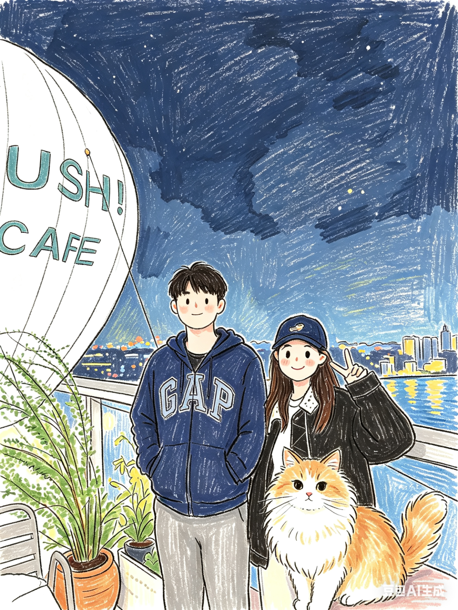
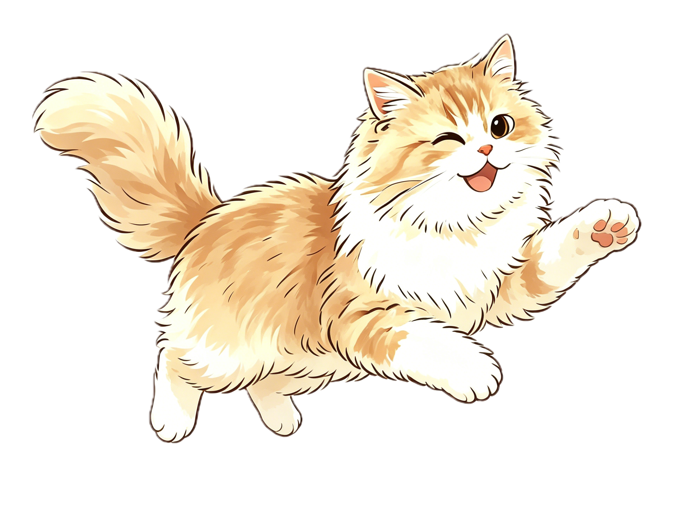

我的状态
白天在需求风暴里对线，晚上在情绪边缘蹦迪。 我可以温柔，但今天真的不想当懂事大人。 该扛的我会扛，不服憋着。
世界忙着按部就班，我忙着在云端撒野
我总是在逻辑与自由之间反复横跳，度过每个春夏秋冬。
成为产品经理是我年少的执念，追逐自由随性是我人生的底色。
这里是我的小世界，不卷、不装、不迎合，只做最鲜活的自己。
点任意标签，拆一张我的专属卡片




从按部就班，到一步步走向独立的职业世界。
内容维护文件：content/past-journey.json（可维护字段：yearMark / sideSkill / sideInsight / sideResult）
项目内容来自 content/past.md 的“## 代表项目（可选）”章节。
白天在需求风暴里对线，晚上在情绪边缘蹦迪。 我可以温柔，但今天真的不想当懂事大人。 该扛的我会扛，不服憋着。
外表是奶香马卡龙，内核是冷萃冰美式。 逻辑在线，脾气有棱角，爱美也爱赢。 能把混乱理成路，也能把路走成舞台。
我的续命公式：冷萃冰美式 + 奶茶续命 + 深夜散步。 拍照、唱歌、city walk，都是我给灵魂充电的方式。 如果今天有风和晚霞，我就原地复活。

🌙 星月游乐场 ✦
放轻松，一切都会变好，不开心的时候就来找我玩吧～
先点月亮 5 次，再试试键盘指令 IMSB，看看会发生什么。
「我会认真工作，也会认真生活。我的目标不是成为最标准的人，而是成为最完整的自己。」
键盘指令：IMSB
独立地思考，顽皮地创造，傲娇地生活，在平衡中与世界和解。
随机抽一张，看看你会拆到哪个隐藏片段。
把烦恼丢进池子，轻一点、松一点。内容仅保存在你自己的浏览器。
⭐ 晚安，玛卡巴卡。 🌙
